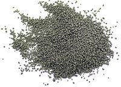

ЧТО ПРЕДСТАВЛЯЕТ ИЗ СЕБЯ ПОРОХ
История создания пороха
Первым представителем взрывчатых веществ был дымный порох
— механическая смесь калиевой селитры, угля и серы, обычно в соотношении 15:3:2.
Существует устойчивое мнение, что подобные составы появились ещё в древности
и применялись главным образом в качестве зажигательных и разрушительных средств.
Однако материальных или надёжных документальных подтверждений этого не найдено.
В природе месторождения селитры встречаются редко, а калиевая селитра,
необходимая для изготовления достаточно стабильных составов, особенно редко,
в Индии и Чили.
Существуют надёжные многочисленные свидетельства, что порох был изобретён в Китае.
К середине первого века нашей эры селитра была известна в Китае
и есть убедительные доказательства использования селитры и серы в различных
комбинациях в основном для приготовления лекарств. Китайский алхимический текст
Тао Хунцзина «Бэньцао цзин цзицзу» («Фармакопея с подборкой комментариев»,
кит. трад. 本草經集注), датированный 492 годом, описывает практический
и надёжный способ отличить калийную селитру от других неорганических солей,
служащий алхимикам для оценки и сравнения методов очистки
— при сжигании калийной селитры образуется фиолетовое пламя.
Древние арабские и латинские способы очистки селитры опубликованы после 1 200 года.
Первое упоминание о напоминающей порох смеси появилось
в Taishang Shengzu Danjing Mijue по Qing Xuzi (около 808 года)
— описывается процесс смешивания шести частей серы, шести частей селитры
на одну часть кирказона (травы, которая обеспечивала смесь углеродом).
использование пороха в истории
 Порох очень часто использовался и до сих пор используется
в военной промышленности, научной деятельности и во многом другом.
Порох очень часто использовался и до сих пор используется
в военной промышленности, научной деятельности и во многом другом.